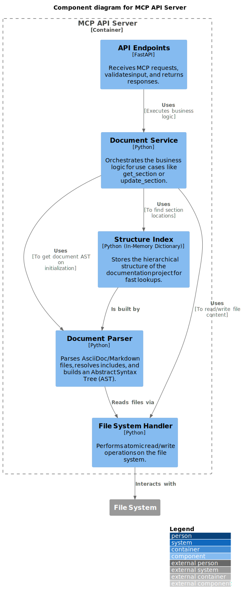
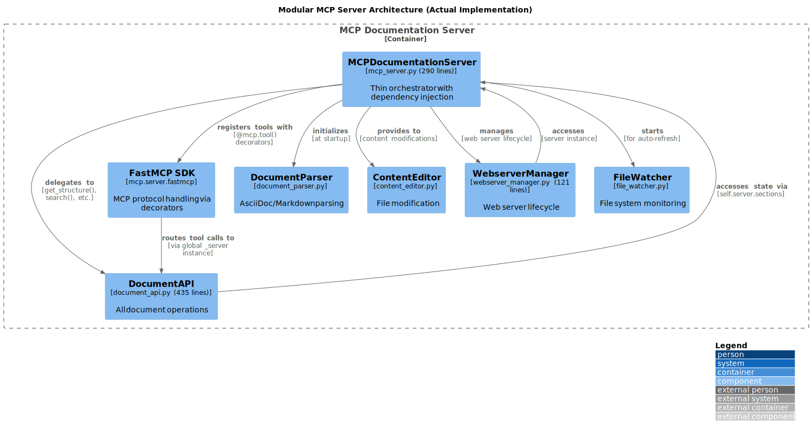

5. Building Block View
This chapter describes the static decomposition of the system into its key building blocks. We use the C4 model to illustrate the structure at different levels of detail.
5.1 Level 2: System Containers
The MCP Documentation Server system is composed of two main containers: a web-based user interface and the back-end API server. The file system acts as the system’s database.
5.2 Level 3: Components of the MCP API Server
We now zoom into the MCP API Server container. It is composed of several components, each with a distinct responsibility, reflecting a classic layered architecture.

Note: The diagram above shows the initial design. Section 5.3 documents the actual implemented modular architecture (Oct 2025) based on ADR-006.
5.3 Modular MCP Server Architecture (Actual Implementation)
Following the refactoring documented in ADR-006, the MCP API Server was split into focused modules to comply with the <500 lines constraint and improve maintainability. This section describes the actual implemented architecture as of October 2025.
Architectural Overview
The MCP Server follows an Extract-and-Delegate pattern with Dependency Injection:

Module Responsibilities
| Module | Responsibility | Key Methods | Lines |
|---|---|---|---|
mcp_server.py |
Server orchestration, MCP tool registration |
|
290 |
document_api.py |
All document operations |
|
435 |
FastMCP SDK |
MCP protocol handling (external dependency) |
|
mcp[cli]>=1.0.0 |
webserver_manager.py |
Web server lifecycle |
|
121 |
document_parser.py |
Parsing logic |
|
82 |
content_editor.py |
File modifications |
|
46 |
file_watcher.py |
File system monitoring |
|
64 |
Total: 1,229 lines across 7 focused modules (vs 916 lines in monolithic mcp_server.py)
Dependency Injection Pattern
The orchestrator (MCPDocumentationServer) creates and injects dependencies:
class MCPDocumentationServer:
def __init__(self, project_root: Path, enable_webserver: bool = True):
# Core components
self.parser = DocumentParser()
self.editor = ContentEditor(project_root)
self.diff_engine = DiffEngine()
# Shared state
self.sections = {} # In-memory index
self.root_files = []
self.included_files = set()
# Modular components (dependency injection)
self.doc_api = DocumentAPI(self) # Receives server instance
self.webserver = WebserverManager(self)
# Initialize
self._discover_root_files()
self._parse_project()
self.file_watcher = FileWatcher(project_root, self._on_files_changed)Each module receives self (the server instance) to access shared state:
class DocumentAPI:
def __init__(self, server: 'MCPDocumentationServer'):
self.server = server # Access to sections, parser, editor
def get_structure(self, max_depth: int = 3):
# Accesses self.server.sections
return self._build_hierarchy(self.server.sections, max_depth)Mental Model: "Modules are pure logic, orchestrator holds state"
This pattern avoids circular dependencies while maintaining clear ownership.
Module Interactions
Typical MCP Request Flow (FastMCP SDK):
-
MCP Client → sends JSON-RPC request via stdin
-
FastMCP SDK →
mcp.run()receives and parses request -
FastMCP SDK → routes to decorated tool (e.g.,
@mcp.tool() def get_structure()) -
Tool Function → accesses
_server.doc_api.get_structure()(global instance) -
document_api.py → executes business logic, accesses
self.server.sections(shared state) -
FastMCP SDK → automatically serializes return value to JSON-RPC response
-
MCP Client → receives JSON-RPC response via stdout
File Modification Flow:
-
DocumentAPI →
update_section_content(path, content) -
DocumentAPI → calls
self.server.editor.update_section() -
ContentEditor → atomic write via backup-and-replace (ADR-004)
-
FileWatcher → detects change
-
MCPDocumentationServer →
_on_files_changed()→ re-parses -
Sections Index → updated with new content
Design Rationale (Mental Model)
Why this modular split? (See ADR-006 for full rationale)
-
Cognitive Load Management
-
Mental Model: "One module = one mental context"
-
500 lines ≈ maximum cognitive capacity for understanding a file
-
Each module can be understood independently
-
-
Testability
-
Each module testable in isolation
-
Result: 82% coverage (vs ~50% before modularization)
-
-
Parallel Development
-
Different concerns = different modules
-
Reduced merge conflicts
-
-
Clear Ownership
-
Document operations → document_api.py
-
Protocol concerns → FastMCP SDK (external dependency, ADR-009)
-
Web server → webserver_manager.py
-
No ambiguity about "where does this code go?"
-
Trade-off: Delegation adds minor indirection overhead Justification: Clarity gain >>> performance cost
5.4 Data Structures
This section documents the core data structures that represent the document model.
Section (Document Node)
The fundamental unit of the document hierarchy:
@dataclass
class Section:
"""Represents a logical section in the documentation"""
id: str # Hierarchical path, e.g., "chapter-1.section-2"
title: str # Section title (from heading)
content: str # Text content of this section
level: int # Heading level (1=chapter, 2=section, 3=subsection, etc.)
children: List[str] # IDs of child sections (hierarchical structure)
source_file: str # Path to source .adoc/.md file
line_start: int # Start line in source file (1-indexed)
line_end: int # End line in source file (inclusive)Mental Model: "A Section is a logical chunk, not a file chunk"
Key insights:
- id encodes hierarchy: "chapter-1.section-2.subsection-3"
- source_file + line_start/line_end enable precise file editing
- Multiple sections can come from one file (via includes)
- One section’s content can span multiple files (via includes)
Example:
docs/architecture.adoc (lines 1-100): Section(id="architecture-documentation", level=1, line_start=1, line_end=2) Section(id="architecture-documentation.introduction", level=2, line_start=3, line_end=10) _introduction.adoc (lines 1-50) [included by architecture.adoc]: Section(id="architecture-documentation.introduction.goals", level=3, line_start=1, line_end=20)
Structure Index (In-Memory)
The server maintains an in-memory index for O(1) lookups:
class MCPDocumentationServer:
sections: Dict[str, Section] # id → Section mapping
root_files: List[Path] # Files not included by others
included_files: Set[Path] # Files included by othersPerformance: - Lookup by ID: O(1) - All sections at level N: O(n) linear scan - Search by query: O(n) with early termination
Memory: - ~600 pages ≈ ~1000 sections - ~1000 sections × ~1KB/section ≈ 1MB in-memory - Acceptable trade-off for instant access
Include Graph
Tracked implicitly via source_file and included_files:
root_files = [main.adoc, other.adoc]
included_files = [_intro.adoc, _glossary.adoc]
Logical structure:
main.adoc
├── Section from main.adoc
├── Section from _intro.adoc (included)
└── Section from _glossary.adoc (included)
Mental Model: "Includes are flattened during parsing, tracked for navigation"
The parser resolves includes recursively, flattening the logical document tree while preserving file provenance for editing.
Feedback
Was this page helpful?
Glad to hear it! Please tell us how we can improve.
Sorry to hear that. Please tell us how we can improve.